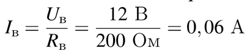
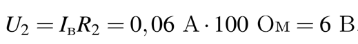

Сопротивление каждого резистора в цепи на рисунке равно 100 Ом. Чему равно напряжение на резисторе R2 при подключении участка к источнику постоянного напряжения 12 В выводами A и B? (Ответ дайте в вольтах.)
Сопротивление последовательного соединенных проводников равно сумме сопротивлений проводников, поэтому сопротивление верхнего участка цепи равно Rв = R1 + R2 = 200 Ом. Напряжение на концах параллельно соединенных проводников одно и то же, поэтому Uв = 12 В. Найдем силу тока, протекающего по верхнему участку цепи: 
Следовательно, напряжение на сопротивлении равно 
Ответ: 6.